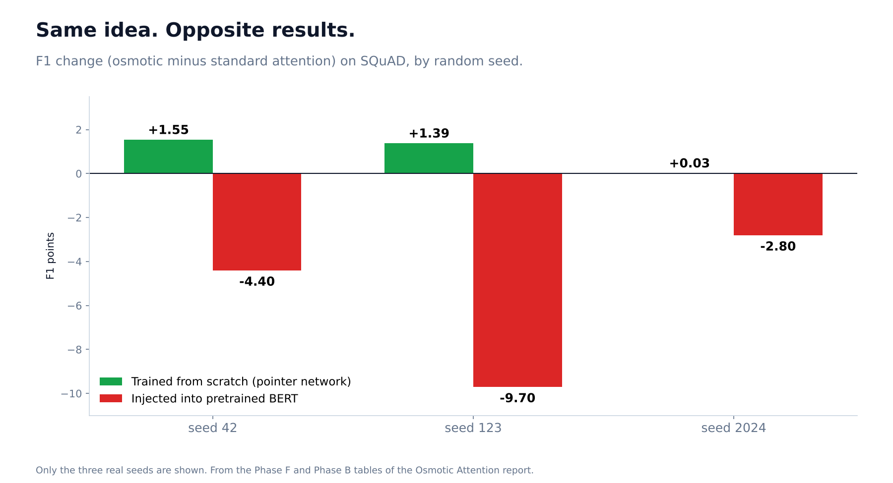
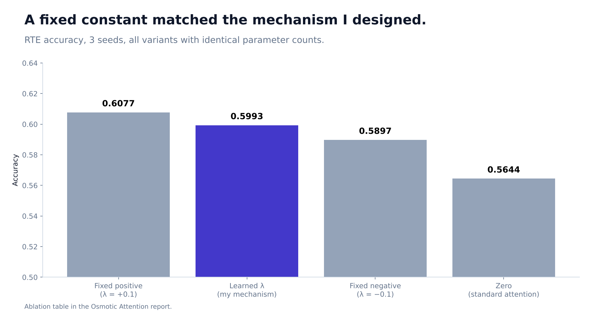

I Borrowed an Idea From Osmosis to Improve Transformers. After 11 Experiments, Mostly It Hurt.
A fair test of a new attention mechanism, including the one place it helped and the theory check I had to retract.

When water crosses a membrane from a crowded side to a sparse one, we call it osmosis. I wondered if a language model's attention could work the same way: let information flow from tokens that carry a lot of it toward those that carry little.
Attention, the core of every modern transformer, scores how much each word should look at every other word. I added one extra term to that score, built from how information-dense each token is (measured with Shannon entropy), a learned gate that works like a membrane, and a per-head knob that starts at zero. At zero it is mathematically identical to normal attention, which I checked with a unit test in every implementation. Any change is something the model learns, not something I forced.
Then I tried to break my own idea, with 5 seeds where I could afford them, two kinds of statistical test, and 11 experimental phases.
What happened with pretrained models
I injected the mechanism into BERT and ran the standard GLUE tests. Across all five tasks, results got slightly but measurably worse. Two of five CoLA runs collapsed completely and predicted a single class. Excluding those two, the loss was about 1 point and still statistically significant (bootstrap p = 0.008). On SQuAD question-answering, the BERT version scored lower on all three seeds (F1 averaging about 73 against 78). On cross-lingual XNLI it lost 0.7 to 1.1 points in all five languages I tried. It also cost 17% more training time, 23% more inference time and 60% more memory.
The ablation that hurt
I wanted to know whether any gain came from the learned direction of information flow, or just from extra capacity. So I trained four versions with identical parameter counts: learned, fixed positive, fixed negative, and zero. On the task I tested (3 seeds), a fixed positive constant (0.6077) did as well as or slightly better than the learned version (0.5993). A simple, non-learned bias matched the mechanism I had designed. That undercuts the main claim.

The theory check I had to retract
I also tested whether the osmotic attention plan approximates optimal transport better than ordinary attention. An early, informal check said yes in 9 of 12 settings. When I redid it properly, with seeds and a two-sided method, the answer was 3 of 12. Informal checks had flattered me, and I now say so in the report.
Where it helped
It did help in three places, all in models trained from scratch rather than adjusted after pretraining:
- Question answering from scratch (a pointer network on SQuAD): positive on all three seeds, an average gain of about 1 F1 point. On one seed the gain was only 0.03, so I describe it as consistent in direction and modest in size.
- A hard long-text task: on IMDB with a from-scratch encoder, the baseline got stuck at exactly 50% (chance) while the osmotic version learned above chance (53% and 57% on the two seeds that finished). It looks like the extra term gave the model a path to learn in a setting where the standard one stalled. Only two seeds, so I treat it as a lead.
- Image and text retrieval: in the cross-modal version (OCAM) I saw a small, steady gain in recall at 1 and 5 in both directions across three seeds.
The pattern fits one working hypothesis: this mechanism may suit models trained with it from the start more than it suits changing a model that has already converged. That is a hypothesis, not a result.
What I would tell you
- A new idea that never lost to a baseline in your own tests probably was not tested hard enough.
- Always run the ablation where you replace the clever part with a constant.
- Be most suspicious of your informal checks. Mine claimed 9 of 12 and the careful version found 3.
- "Does not help here, might help there" is a result, and it saves the next researcher weeks.
Code: github.com/Davuri124/osmotic-attention